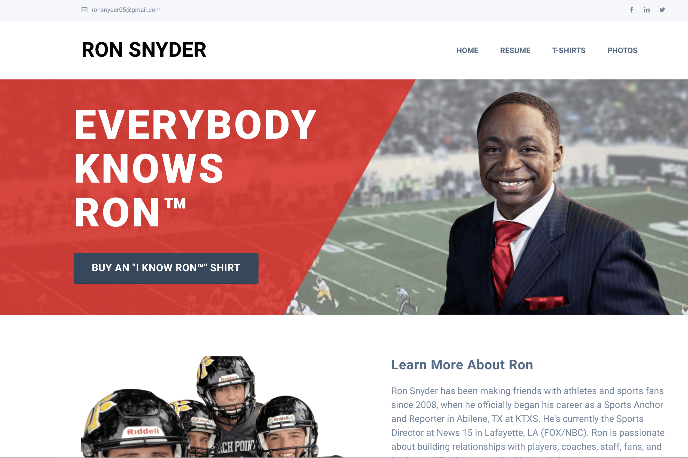

<div id="ajax-page" class="ajax-page-content">
    <div class="ajax-page-wrapper">
        <div class="ajax-page-nav">
            <div class="nav-item ajax-page-prev-next">
                <a class="ajax-page-load" href="everyday-sacredness.html"><i class="lnr lnr-chevron-left"></i></a>
                <a class="ajax-page-load" href="urban-insulatino.html"><i class="lnr lnr-chevron-right"></i></a>
            </div>
            <div class="nav-item ajax-page-close-button">
                <a id="ajax-page-close-button" href="#"><i class="lnr lnr-cross"></i></a>
            </div>
        </div>

        <div class="ajax-page-title">
            <h1>Everybody Knows Ron</h1>
        </div>

        <div class="row">
            <div class="col-sm-7 col-md-7 portfolio-block">
                
                <div class="portfolio-page-image">
                    
                </div>
                
                <script type="text/javascript">
                    jQuery(document).ready(function($){

                        $('.portfolio-page-carousel').owlCarousel({
                            smartSpeed:1200,
                            items: 1,
                            loop: true,
                            dots: true,
                            nav: true,
                            navText: false,
                            margin: 10
                        });

                    });
                </script>
            </div>

            <div class="col-sm-5 col-md-5 portfolio-block">
                <!-- Project Description -->
                <div class="project-description">
                    <div class="block-title">
                        <h3>Project Details</h3>
                    </div>
                    <ul class="project-general-info">
                        <li><p><i class="fas fa-laptop-code"></i> <a href="https://everybodyknowsron.com/" target="_blank">everybodyknowsron.com</a></p></li>
                    </ul>
                    
                    <p class="text-justify">Ron Snyder is a locally-loved sports anchor in Louisiana who started a t-shirt fundraiser for a local suicide education and awareness organization.</p>
                    <p class="text-justify">The client was in need of a new website that would function as a resume and portfolio of work, as well as a platform for publicizing and implementing his t-shirt campaign to raise funds to donate to a local organization. Polypore Design integrated a bootstrap template with WordPress and WooCommerce, working with Ron to incorporate his personality and voice into his website. We provided photo and copyediting services and taught Ron how to run his new WooCommerce store.</p>

                    <!-- /Project Description -->

                    <!-- Services -->
                    <div class="tags-block">
                        <div class="block-title">
                            <h3>Services</h3>
                        </div>
                        <ul class="tags">
                            <li>TEMPLATE CUSTOMIZATION</li>
                            <li>RESPONSIVE WEB DESIGN</li>
                            <li>WORDPRESS AND WOOCOMMERCE INTEGRATION</li>
                        </ul>
                    </div>
                    <!-- /Services -->
                </div>
                <!-- Project Description -->
            </div>
        </div>
    </div>
</div>
